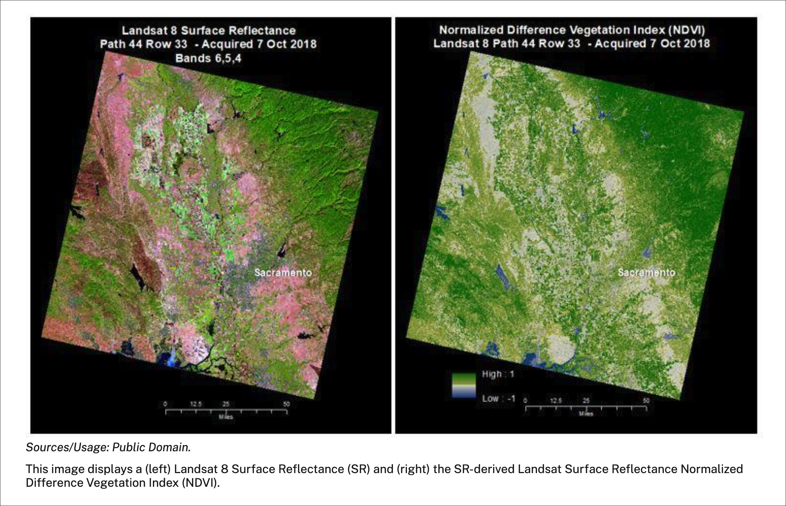
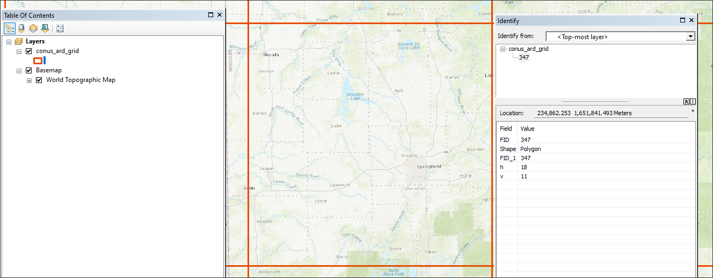
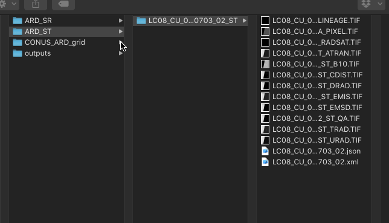
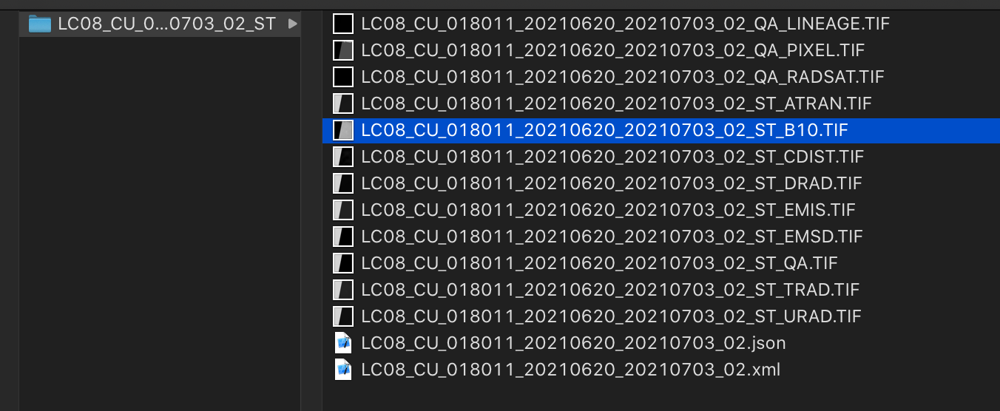
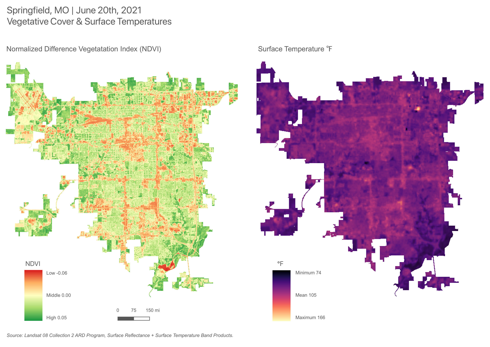

Preamble
In this tenth assignment, you will utilize the Class 10 Technical Lab as a guide to complete your tenth mapping project for remote sensing (RS) data in an urban space. In this RS assignment , you will first access and download Landsat ARD data for an urban area of your choice. Once complete, you will create a Surface Temperature product to gauge potential urban heat island effect, coupled with a spectral index for NDVI - Normalized Difference Vegetation Index. When compared side by side, spatial patterns consistent across both rasters should be evident.
The assignment features several sections as follows:
- Landsat Analysis Ready Data (ARD) Program
- Surface Reflectance and Temperature Surface products
- Band Combinations
- Spectral Indices
Assignment 10 - Data

Note: The C10 Data Pacakge features the ARD grid utilized early in the assignment to determine the horizontal and vertical position of the assignment AOI. Once done, two empty folders are provided for the surface temperature data (ARD_ST) and the surface reflectance data (ARD_SR). When accessing data at EarthExplorer, the results can be placed in the ARD_ST and ARD_SR folders, respectively, to keep assignment organization.
To begin the assignment, download and access the assignment directory. Create a new assignment .mxd and connect Data Source Manager to the assignment directory to import the ARD grid shapefile - conus_ard_grid.shp:

h; vertical grid value vClass 10 Readings:
This week’s reading that will be featured on the upcoming quiz will be from Essentials of Geographic Information Systems textbook.
The Class 10 quiz on Monday 04/15/24 will feature 10 questions covering content in the textbook Chapter 6:
Essentials of Geographic Information Systems textbook - Chapter 6, pages 141 - 146 (Starting at: 6.3 Satellite Imagery and Aerial Photography )
Supplemental reading (not featured on Quiz):
Note several linked research references to help explain underlining concepts for urban heat islands and vegetative cover in urban areas - located in Class 10 Technical Lab.
Assignment Step 1
- Acquire Landsat 8 ARD Imagery for both surface reflectance and temperature values
To Start, the demonstration of the assignment will rely on both the general process and sample imagery for the city of Springfield, MO. This is known as the Area of Interest (AOI); the imagery date is the height of summer on June 20th, 2021 at approximately 10:50 am (more on how to determine time of the imagery later in the assignment).
For your own deliverable, you will choose a separate city as your AOI, utilizing the following steps to proceed to surface temperature and NDVI index products featured in the assignment result. Make sure to place the Landsat 8 product into both the ARD_SR and ARD_ST directories:

Next, Navigate to EarthExplorer and access the necessary data for your own AOI.
Assignment Step 2
- Verify Landsat 8 ARD Imagery Date, Time, Azimuth and Elevation
As described in the lab step, verify your AOI Landsat product date, time, position and temperature parameters. In the end, you are seeking parameters that would match a typical warm to hot summer day in your chosen AOI urban space.
Assignment Step 3
- Processing the Imagery for NDVI
The NDVI spectral index will be created based on the following formula:
NDVI = (NIR Band - Red Band / (NIR Band + Red Band)As translated to the Landsat 8 band numbers:
NDVI = (Band 5 – Band 4) / (Band 5 + Band 4)Save the results as your_city_name_NDVI.tif into the outputs folder. You can also save a .mxd project into the assignment folder before proceeding to the next steps.
Assignment Step 5
- Processing the Imagery for Surface Temperature
With NDVI complete, turn to calculating the Surface Temperature utilizing the ST layer in the ARD_ST folder. Import this band layer into the TOC of the .mxd project.

ST_B10 BandAssignment Step 6
- Mask Analysis Layers to a Common AOI Extent
Like Assignment 6 Map Projections, utilize Overpass Turbo to access and load a polygon mask extent for your AOI extent. Proceed to masking both the surface temperature and NDVI rasters.
Use the same process of Assignment Step 1 in lab 6 to first gain the geojson geometry for your chosen city, followed by mapshaper to transform to .shp.
Assignment Step 7
- Cartographic Design
Lay in the two analysis layers, and apply a continuous gradient legend to each. Make sure to retain the exact same map scale and position for each map frame. Proceed to Map layout & Deliverable below.
Map layout & Deliverable:
- To development the final map design, utilize the map example PDF below to help guide your process.

In the layout example provided, both legends are oriented with low values at top, high values at bottom. There’s a strong argument to flip these legends so they correspond better. Low NDVI values correspond with high surface temperatures; it would be appropriate and logical to flip the surface temperature legend so that its high values are on top and correspond with the low NDVI values at top of the respective NDVI legend.
- A PDF of the map layout template is located HERE
The final map design should include the following:
Landscape or portrait orientation map sheet (your choice)
Two map outputs, one for Surface Temperature and one for NDVI.
Titling that explains the location, date range and thematic purpose of the map.
Continuous legend for both NDVI and Surface Temperature values
Source the data as follows:
Landsat-8 2 ARD Program, Surface Reflectance + Surface Temperature Band Products.
Utilize the following map example to guide your design process: